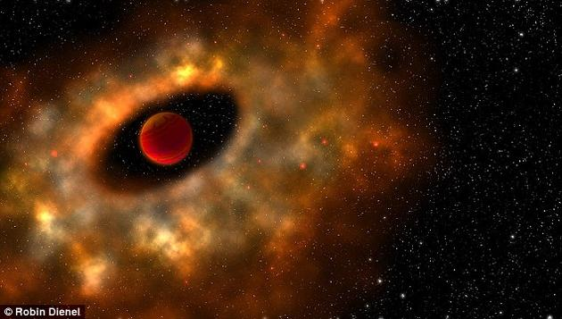
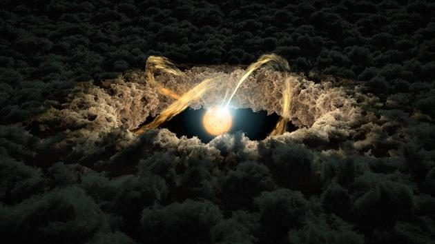

新浪科技讯 北京时间9月29日消息，据英国《每日邮报》报道，要想理解行星的形成机制，最佳的办法之一便是直接目睹这一过程。现在，科学家们做到了。 当一颗恒星在“年轻”的时候，其周围常常被一个气体与尘埃组成的圆盘围绕，这就是所谓“吸积盘”结构。正是在这样一个尘埃气体盘内部，行星开始逐渐形成。 在一些大质量的年轻恒星周围，这样的尘埃气体云盘常常可以被观察到，但近日加拿大蒙特利尔大学以及美国华盛顿卡内基梅隆大学的科学家们在4颗小质量天体的周围同样探测到了类似的吸积盘结构。其中三颗的质量非常小，基本可以被归类到最小型的褐矮星行列——这三颗天体的质量值分别在木星质量的13~18倍之间，而剩下的那颗则更大一些，质量大致是木星的120倍左右。相关观测结果将帮助我们了解恒星和行星是如何形成的。同时它也意味着宇宙中或许还隐藏着更多类似情况的天体。

研究人员们表示，此次观测到的这四颗天体中，有两颗的年龄分别在4200万到4500万年之间。这样的年龄数值将使它们成为被活跃吸积盘包裹的迄今已知年龄最老的天体。 蒙特利尔大学的安妮·鲍彻（Anne Boucher）是相关研究论文的第一作者，她表示：“对我们而言，在小质量天体系统中发现吸积盘结构是一件令人兴奋的事，因为那些质量小到接近恒星最低质量下限的天体周围仍然能够存在孕育行星的吸积盘的这一事实，将告诉我们很多有关恒星和行星演化方面的信息。”
在这样的尘埃与气体云团中，细小的尘埃颗粒互相碰撞、结合并逐渐变大，就像滚雪球一般逐渐“长大”，一直到变成一座小山的级别，随后成为一座大山，最终形成所谓星子（planetesimal）——这是行星的雏形。随后，这一激烈的碰撞与合并过程继续进行，直到最终那些个头最大的幸存下来，形成最终的行星体。而在所有这些最终保留下来的大个子中间，有些个体会吸引大量气体，并最终形成气态巨行星，类似太阳系中的木星与土星，而另外一些质量稍小的则形成类似地球与火星那样的岩石星球，究竟成为哪一类，很大程度上要取决于它们各自的质量大小以及形成时所处的环境温度高低。 在行星形成过程基本结束之后，在恒星周围有时仍然会剩下一些尘埃颗粒物质，但很快会被强大的恒星风清扫干净。但在那之前，年轻恒星的周围常常能够看到一层薄薄的尘埃带。
当天文学家们观测到类似的尘埃气体盘结构时，弄清楚其究竟处于什么阶段是十分关键的。观测显示这四颗天体周围的吸积盘都并非处于行星形成后的阶段，而是正处于行星形成的中间时期。 卡内基梅隆大学的乔纳森·加尼（Jonathan Gagné）是这项研究的合著者，他表示：“关于围绕小质量天体周围的尘埃盘结构还有太多的东西需要去了解，以便能够明确在这些尘埃盘结构内正在发生的机制，并帮助判断它们是否能够成为未来行星搜寻工作的理想观测目标。”（晨风）